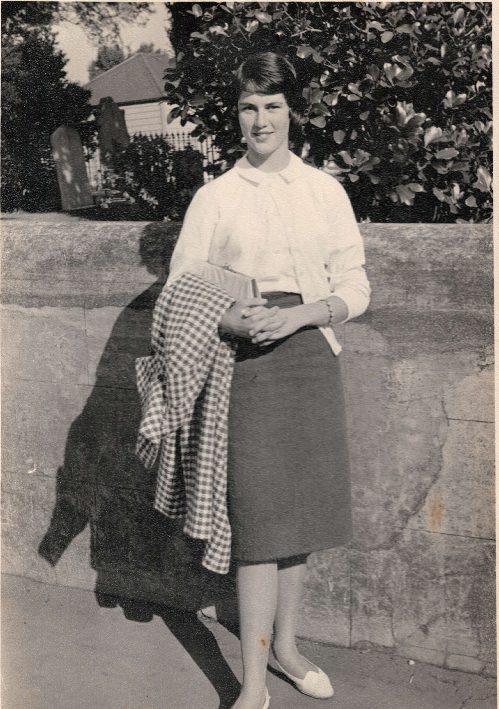
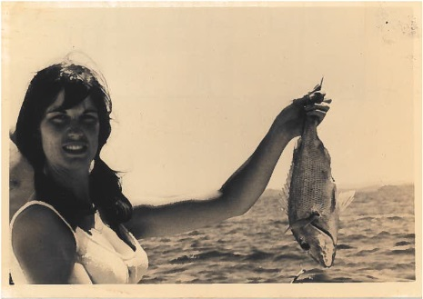
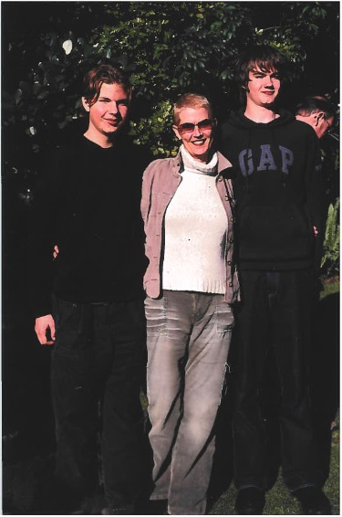

Lindsay Meller
This project was initiated by me, Rupert Foggo McKay, while archiving
a box of family photos belonging to my mother, Lindsay Meller. It aims
to document and preserve these photos for the benefit of all friends
and family. Feel free to share this webpage with anyone it may be of
interest to.
I have aimed to order photos chronologically, name all pictured
individuals, and include any written text on the back of each photo in
the description. I have likely made some mistakes. Let me know if you
can help me fill in blanks, or make corrections. Additionally I will
respect any requests to take a photo down, if you have reason to
believe a particular picture ought to remain private. Get in touch
with me via email at
maxfmckay@gmail.com.
Lindsay was born in Te Awamutu, New Zealand on 22nd November 1946.
Daughter to Alfred and Fredda Duncalfe. Sister to Hilary and Ken.
Mother to Tracey, Felix, and Rupert. In 2005 Lindsay died of lung
cancer.

Alfred Duncalfe. Very faint text reads: "Alfred between two and
three."

Fredda, the day she found out she was pregnant with her first child.
Hand writing on the back reads: "Taken by the avon river ch June 1943.
Isn't she beautiful!".

A large four-masted boat. Ship's name and date unknown.

I'm guessing, but I think this must be Hilary.
A pair of cakes, one pink and one blue. A celebration for Lindsay and
Ken perhaps?
Fredda, Alfred and Hilary around a pram. The twins Lindsay and Ken are
in the pram. Hand writing on the back reads: "Taken at Mangapiko St Te
Awamutu."
Lindsay and Ken in a pram. Hand writing on the back reads: "10
months".
Ken, Hilary, and Lindsay. Hand writing on the back reads: "12 months".
Lindsay with a teddy bear. Hand writing on the back reads: "Lindsay
aged 13 months".
Lindsay, Hilary and Ken.
Lindsay, Hilary and Ken. Hand writing on the back reads: "all set to
go 1949".
Lindsay and Ken in costumes. Stamp on the back reads: "NELSON IRVING
Photographer - Te Awamutu".

Hilary, Fredda, and Lindsay. Hand writing on the back reads: "1958
(approx)".

Ken, Lindsay, Alf, Hilary, and Fredda.

Top row: ?, ?, Ken. Middle row: ?, Lindsay, ?, Fredda. Bottom row: ?,
?, ?. Hand writing on the back reads: "At westgate farm. Jan 61"

Hand writing on the back reads: "12 Kensington Ave. Lindsay Duncalfe
(14½). Auckland May Holiday 10th 1961."
Hand writing on the back reads: "Sec. School Charity Ball Hamilton.
Peter Craig + Lins June 1963".
Lindsay, Alf, Ken, Fredda, and Hilary.
Hand written on the back: "22/10/67 Ken Lindsay 21st Party"

Ken and Lindsay cut the cake at their 21st birthday.
Hand writing on the back reads: "21st BIRTHDAY. Ken + Lindsay."

Lindsay and friends.
Ken and Lindsay.

Lindsay goes fishing. Hand writing on the back reads: "The first and
the Biggest February, Manly '67".
Ken and Lindsay. Hand writing on the back reads: "Front steps of 2
Ngaire Ave., Epsom 23rd July 1967".
Three unknown kids and Lindsay. Hand writing on the back reads: "18th
Mar, 1968"
Lindsay teaching class. Three boys are in shot too. Hand writing on
the back reads: "Belfast School 1968".

Hilary. Appears to be dressed as a bridesmaid.
Lindsay and unknown.
Lindsay and unknown.
Hilary and Ken.
Hilary. This appears to be a cropped duplicate of the prior photo.

Lindsay. Dressed as a bridesmaid.
Fredda and Alf. The label reads: "Richard Wallace. Otorohanga".

Fredda and Alf outside the house in McNair Road.
Lindsay.

A pair of photos. In the top is Lindsay and friend Sally. In the
bottom is Al and Lindsay.

Lindsay enjoying a bottle of wine.
Hand writing on the back reads: "22.10.75 at my birthday party in the
office. Knickers, suspender belt & Christian Dior Stockings on display
were the presents to me from the office."
Lindsay at her wedding with a bottle of wine. Hand writing on the back
reads: "03.07.1981".
Hugh Meller and Lindsay get married. Hand writing on the back reads:
"03.07.1981"
This letter was sent from Fredda in Te Awamutu, New Zealand to Lindsay
in Devon, England on 28th January 1982. My mother kept this letter for
over 20 years; until her death. I have kept it for nearly 20 more.
Inside is a letter four pages long. It would violate their privacy to
transcribe it here. But I will share that it begins: "Dear Lins". And
ends: "Love ma."
Felix and Lindsay. Hand writing on the back reads: "23 April '83".
Felix and Lindsay. Hand writing on the back reads: "May 29 '83".
Felix and Lindsay. Hand writing on the back reads: "1983".

A large family gathering. Back row: Rupert, Lindsay, Lindsay, ?, Jill,
Alf, ?, ?, ?, Ken, ?. Front row: Felix, Amber, Renay, Luke, ?, ?.

Lindsay, Rupert, and Lindsay.

Lindsay McKay, Lindsay Meller, Rupert and Felix. Hand writing on the
back reads: "14 Feb 1988 Valentine's day party".

Felix, Lindsay, and Rupert. Hand writing on the back reads: "Sept 88?"
Lindsay in water. Hand writing on the back reads: "Natural thermal
waterhole near Waiotapu 8th January 1990".

Lindsay. Hand writing on the back reads: "1990?"
Lindsay, Rupert, and Felix. Hand writing on picture frame reads:
"Brittany 1993".

Rupert, Lindsay, and Felix at the seaside. Also taken in Brittany
1993.
Lindsay, Rupert, and Felix. Hand writing on the back reads: "C.May
1995".
Rupert, Lindsay, Richard, and Felix. Taken in the back garden of 117
St. James Road.
Lindsay in the foreground. Two unknowns in the background. Hand
writing on the back reads: "On tour cricket v Dutch Parliament".
Additionally a stamp reads: "27 JUNI 1997". "JUNI" is Dutch for
"JUNE".
Lindsay graduates with an MA in Child Law. Hand writing on the back
reads: "June 1999".

Lindsay and Toni at Christmas. Taken at 117 St. James Road,
Southampton.
Christmas at Hotel du Vin in Winchester. Seated: ?, Lindsay, Felix,
Rupert, Jeanie, Toni, Corin. Hand writing on the back reads: "Xmas
2002."

Alexander Von Benckendorff, Lindsay, and Rupert, taken in New Zealand
in 2003.

Lindsay and Alf in 2003.
Lindsay. Hand writing on the back reads: "June 2004".

Hand writing on the back reads: "with Dennis & Edna Healey June 2004"
Lindsay and Felix at his graduation. Hand writing on the back reads:
"nov 2004".
A collage of photos from Felix's graduation. Some printer ink appears
to have run in splotches on the upper left.
Rupert, Lindsay, and Felix. Taken in the back garden of 117 St. James
Road.